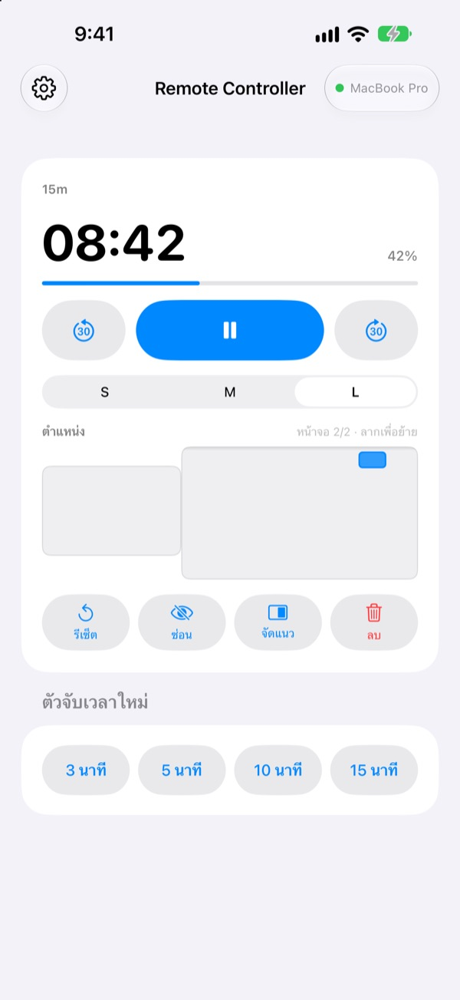
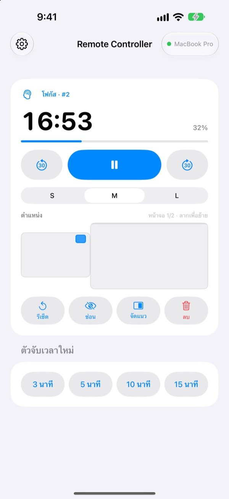
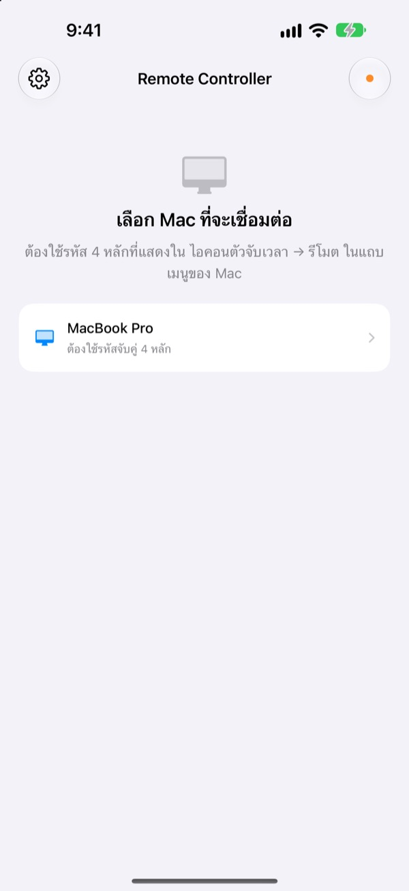

เดินห่างจาก Mac ได้
ตัวจับเวลายังอยู่ในมือ
ควบคุมตัวจับเวลาของ StickyPresenter บน Mac จาก iPhone เดินออกไปหน้าห้องแล้วก็ยังดูเวลาที่เหลือ หยุดชั่วคราว เพิ่ม 30 วินาที หรือเลื่อนตัวจับเวลาที่บังกราฟออกไปได้
ฟรี · iOS 17 ขึ้นไป · ต้องมี Mac ที่เปิด StickyPresenter อยู่ใน Wi‑Fi เดียวกัน

ยังต้องเดินกลับไปที่โน้ตบุ๊กเพื่อแตะตัวจับเวลาอยู่หรือเปล่า
พูดเกินเวลาและอยากได้เวลาเพิ่ม หรือตัวจับเวลาไปบังกราฟที่สำคัญที่สุดพอดี ที่ผ่านมาต้องเดินตัดหน้าผู้ฟังไปเอื้อมมือแตะแทร็คแพด แต่ด้วย Remote Controller คุณยืนอยู่ที่เดิมแล้วแตะ iPhone ครั้งเดียวก็พอ
เห็นเวลาที่เหลือ แล้วปรับได้ทันที
เวลาที่เหลือและความคืบหน้าอัปเดตทุกวินาที ถ้าใช้โพโมโดโรก็เห็นด้วยว่าตอนนี้เป็นช่วงโฟกัสหรือพัก และอยู่รอบที่เท่าไร
พูดยาวไปก็เพิ่ม 30 วินาที จบเร็วกว่าที่คิดก็ลด 30 วินาที เริ่มตัวจับเวลาใหม่ 3, 5, 10 หรือ 15 นาทีได้ในแตะเดียว และสลับขนาดวิดเจ็ตเป็น S, M หรือ L ให้คนแถวหลังอ่านออก

ป้อนรหัสครั้งเดียวเท่านั้น
เปิดแอปแล้ว Mac ทุกเครื่องใน Wi‑Fi เดียวกันที่เปิด StickyPresenter อยู่จะขึ้นเป็นรายการ เลือก Mac ของคุณ แล้วป้อนรหัสสี่หลักจาก ไอคอนตัวจับเวลา ▸ รีโมต ในแถบเมนูของ Mac ก็เรียบร้อย
ครั้งต่อไปแค่เปิดแอป ก็เชื่อมต่อกับ Mac เครื่องนั้นเองอัตโนมัติ ไม่ต้องมีบัญชี ไม่มีเซิร์ฟเวอร์ อุปกรณ์ทั้งสองคุยกันโดยตรงผ่านเครือข่ายภายใน

เริ่มใช้ได้ใน 3 ขั้นตอน
- 1
เปิด StickyPresenter บน Mac
ถ้าเห็นไอคอนตัวจับเวลาในแถบเมนูก็พร้อมแล้ว แม้จะปิดทุกหน้าต่าง แอปก็ยังอยู่ในแถบเมนู
- 2
เปิดแอปใน Wi‑Fi เดียวกัน
เมื่อแอปขอสิทธิ์เข้าถึงเครือข่ายภายใน ให้แตะอนุญาต แอปจะได้ค้นหา Mac ของคุณเจอ
- 3
เลือก Mac แล้วป้อนรหัส
ป้อนรหัสจับคู่สี่หลักจาก ไอคอนตัวจับเวลา ▸ รีโมต ในแถบเมนูของ Mac แล้วก็ควบคุมได้ทันที
สิ่งที่ทำได้จาก iPhone
- เวลาที่เหลือ
- เวลาที่เหลือ ความคืบหน้า ช่วงโฟกัสหรือพักของโพโมโดโร และหมายเลขรอบ อัปเดตทุกวินาที
- เริ่ม · หยุดชั่วคราว
- ปุ่มใหญ่ปุ่มเดียวตรงกลาง
- ลบ 30 วินาที · เพิ่ม 30 วินาที
- ปุ่มสองข้างปรับตัวจับเวลาที่กำลังเดินได้ทันที
- ตัวจับเวลาใหม่
- 3, 5, 10 หรือ 15 นาที
- ขนาด
- วิดเจ็ตขนาด S, M หรือ L
- ตำแหน่ง
- ลากบนแผงที่ย่อเลย์เอาต์หน้าจอ Mac ไว้ ข้ามไปจอแสดงผลต่อขยายได้ด้วย
- ซ่อน
- ซ่อนวิดเจ็ตจากผู้ฟังชั่วคราว
- จัดแนว
- เรียกวิดเจ็ตที่หาไม่เจอกลับมาไว้ข้างหน้าต่างตัวจับเวลา
- รีเซ็ต · ลบ
- เริ่มตัวจับเวลาใหม่ตั้งแต่ต้น หรือลบทิ้ง
- คำสั่งลัด · Siri
- พูดว่า
เริ่มตัวจับเวลาด้วย Remote Controllerเพื่อเปิดตัวจับเวลาบน Mac
รีโมตควบคุมได้เฉพาะตัวจับเวลาที่ทำงานอยู่บน Mac โน้ตและบทของเทเลพรอมป์เตอร์จะไม่ถูกส่งไปที่ iPhone และเปลี่ยนสไลด์ไม่ได้
คำถามที่พบบ่อย
ใช้แอปบน iPhone อย่างเดียวได้ไหม
ไม่ได้ Remote Controller เป็นรีโมตของ StickyPresenter บน Mac จึงต้องมี Mac ใน Wi‑Fi เดียวกันที่เปิด StickyPresenter อยู่ ดาวน์โหลดแอป Mac ได้จากลิงก์ด้านล่าง หรือจาก รับแอปสำหรับ Mac ในการตั้งค่าของแอป
Mac ของฉันไม่ขึ้นในรายการ
ถ้าผ่านไป 10 วินาทีแล้วยังไม่พบ Mac แอปจะแสดงรายการตรวจสอบ ให้ไล่ดูจากบนลงล่าง StickyPresenter เปิดอยู่บน Mac (มีไอคอนตัวจับเวลาในแถบเมนู) อุปกรณ์ทั้งสองอยู่ใน Wi‑Fi เดียวกัน (เครือข่ายสำหรับแขกใช้ไม่ได้) เปิด Remote Controller แล้วที่ การตั้งค่า ▸ ความเป็นส่วนตัวและความปลอดภัย ▸ เครือข่ายภายใน บน iPhone อนุญาต StickyPresenter แล้วที่ การตั้งค่าระบบ ▸ ความเป็นส่วนตัวและความปลอดภัย ▸ เครือข่ายภายใน บน Mac และปิด VPN แล้ว
แอปบอกว่ารหัสไม่ถูกต้อง
ป้อนตัวเลขสี่หลักที่แสดงอยู่ตอนนี้ใน ไอคอนตัวจับเวลา ▸ รีโมต ในแถบเมนูของ Mac ถ้ามีคนกด สร้างรหัสจับคู่ใหม่ บน Mac ไปแล้ว จะใช้ได้เฉพาะรหัสใหม่
แอปบอกว่า Mac จำ iPhone เครื่องนี้ไม่ได้
เกิดขึ้นหลังจากกด ลืมรีโมตที่จับคู่ไว้ บน Mac หรือหลังจากติดตั้ง StickyPresenter ใหม่ แตะ Mac ในรายการแล้วป้อนรหัสจับคู่อีกครั้ง
แอปบอกว่า Mac ไม่ตอบสนอง
ตรวจสอบว่า Mac ไม่ได้อยู่ในโหมดพัก อุปกรณ์ทั้งสองอยู่ใน Wi‑Fi เดียวกัน และปิด VPN แล้ว
แอปบอกว่าต้องอัปเดตแอปบน Mac
StickyPresenter บน Mac เป็นเวอร์ชันที่เก่ากว่ารีโมต อัปเดตจาก Mac App Store แล้วเลือก Mac ในรายการอีกครั้ง
ใช้ในห้องประชุมที่มี Mac หลายเครื่องได้อย่างปลอดภัยไหม
ได้ รีโมตจะเชื่อมต่อกับ Mac เครื่องเดียวที่จับคู่ไว้เท่านั้น และรีโมตที่ไม่รู้รหัสของคุณก็เข้าถึง Mac ของคุณไม่ได้ ข้อมูลทั้งหมดส่งผ่านการเชื่อมต่อโดยตรงที่เข้ารหัสภายในเครือข่ายเดียวกัน ถ้าเคยให้คนอื่นเห็นรหัส ให้กด สร้างรหัสจับคู่ใหม่ บน Mac
มีอะไรถูกส่งออกไปทางอินเทอร์เน็ตบ้าง
ตัวจับเวลาและคำสั่งต่าง ๆ ไม่ออกไปนอกเครือข่ายภายในของคุณ สิ่งที่ส่งผ่านอินเทอร์เน็ตมีเพียงสถิติการใช้งานแบบไม่ระบุตัวตน รายงานข้อขัดข้อง และความคิดเห็นที่คุณเลือกส่งเอง ดูรายละเอียดได้ในนโยบายความเป็นส่วนตัว
สั่ง Siri ให้เริ่มตัวจับเวลาก่อนขึ้นพูดได้ไหม
ได้ พูดว่า “เริ่มตัวจับเวลาด้วย Remote Controller” หรือใช้คำสั่ง เริ่มตัวจับเวลาบน Mac ในแอปคำสั่งลัด แอปจะเปิดขึ้นและเริ่มตัวจับเวลาตามความยาวที่คุณเลือก (1 ถึง 600 นาที) ทันทีที่เชื่อมต่อกับ Mac
มีคำถาม เจอปัญหา หรืออยากเสนอไอเดีย ส่งอีเมลมาที่ mizzking75@gmail.com หรือส่งจาก iPhone ได้เลยที่ไอคอนเฟืองมุมซ้ายบนของแอป ▸ ส่งความคิดเห็น